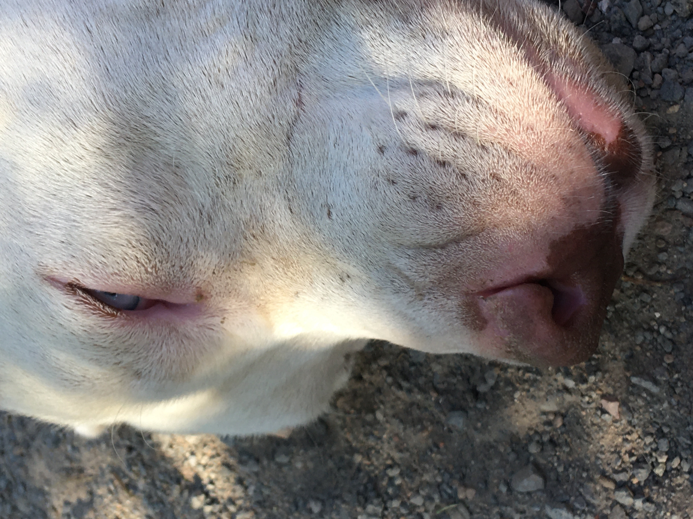
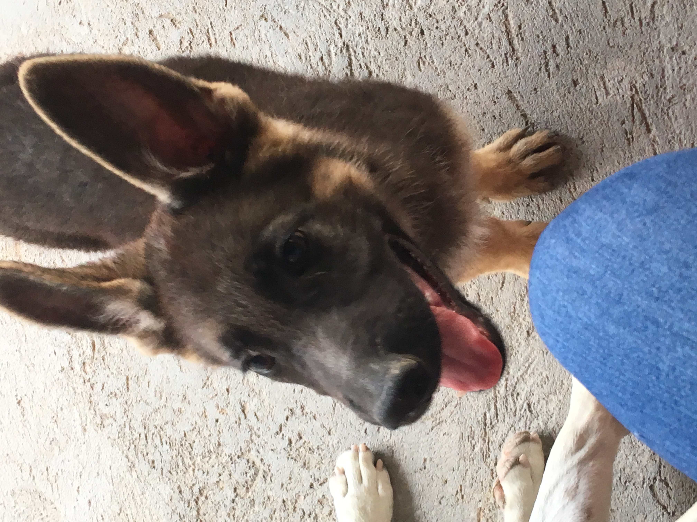

Nunca fui de tomar muchas fotografías o de aparecer en ellas. Durante toda mi vida he lidiado con problemas de autoestima que me limitan en ese aspecto. Pero, siendo adolescente, caí en cuenta de que mis nervios, mi vergüenza y mi miedo irracional a la cámara me hicieron perderme de momentos que hoy, ya no recuerdo por más que intento.